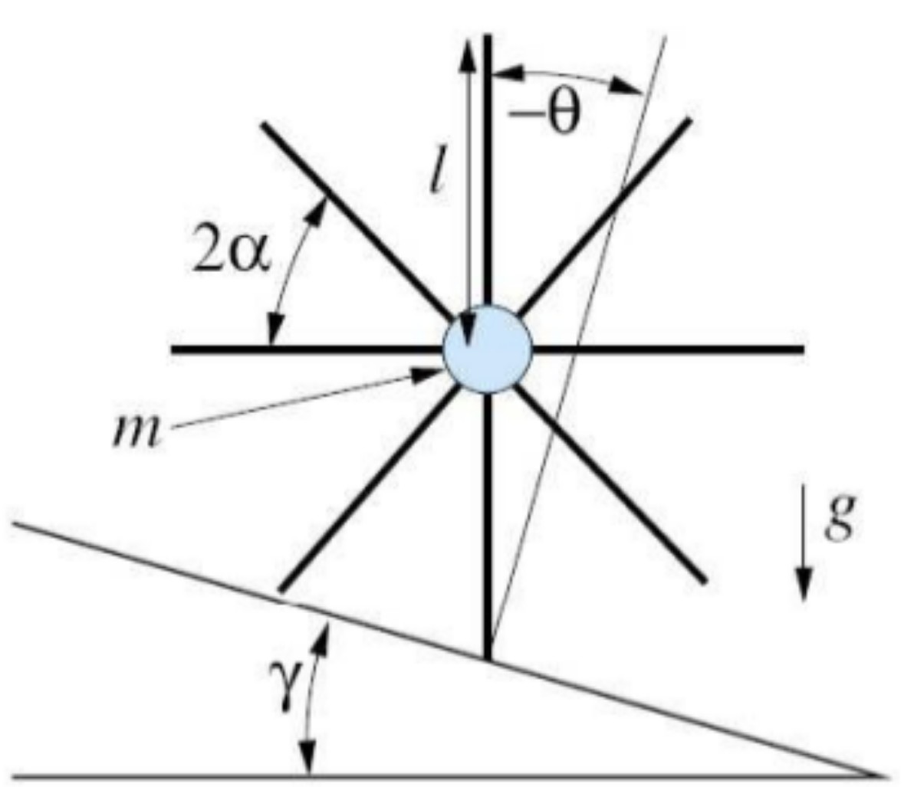
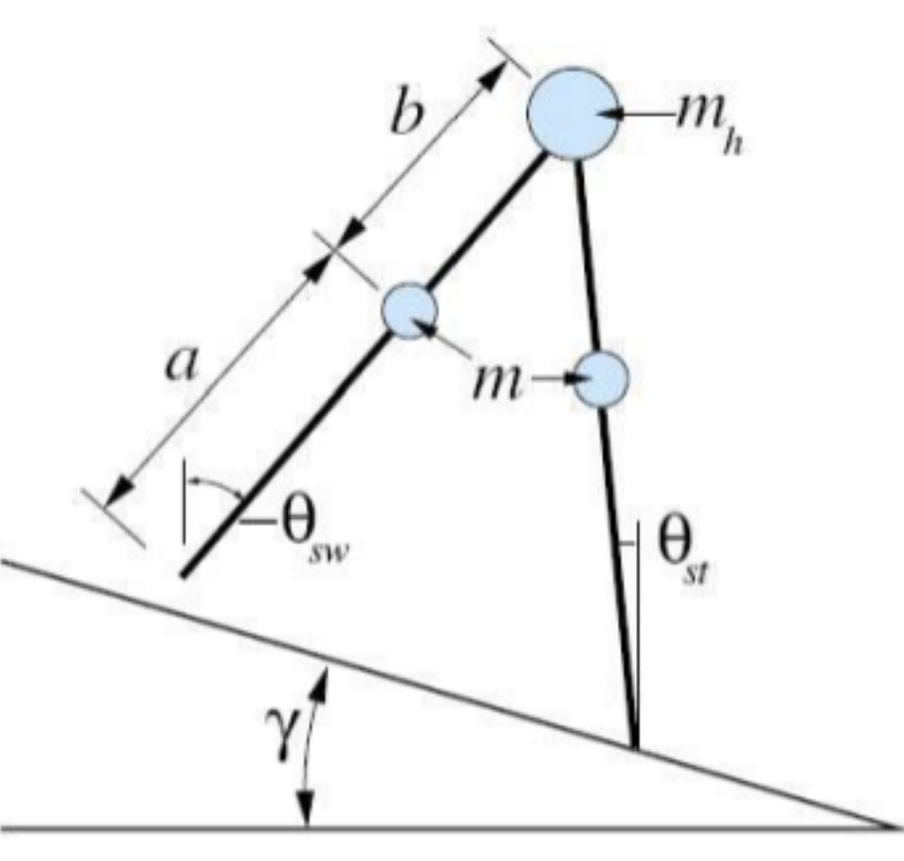
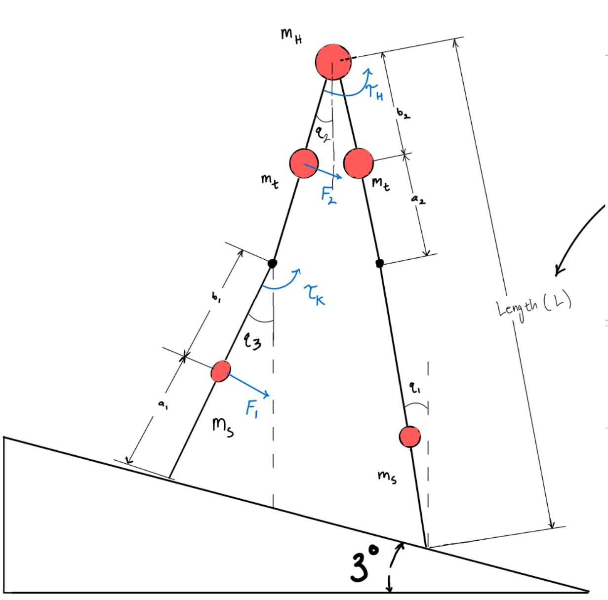
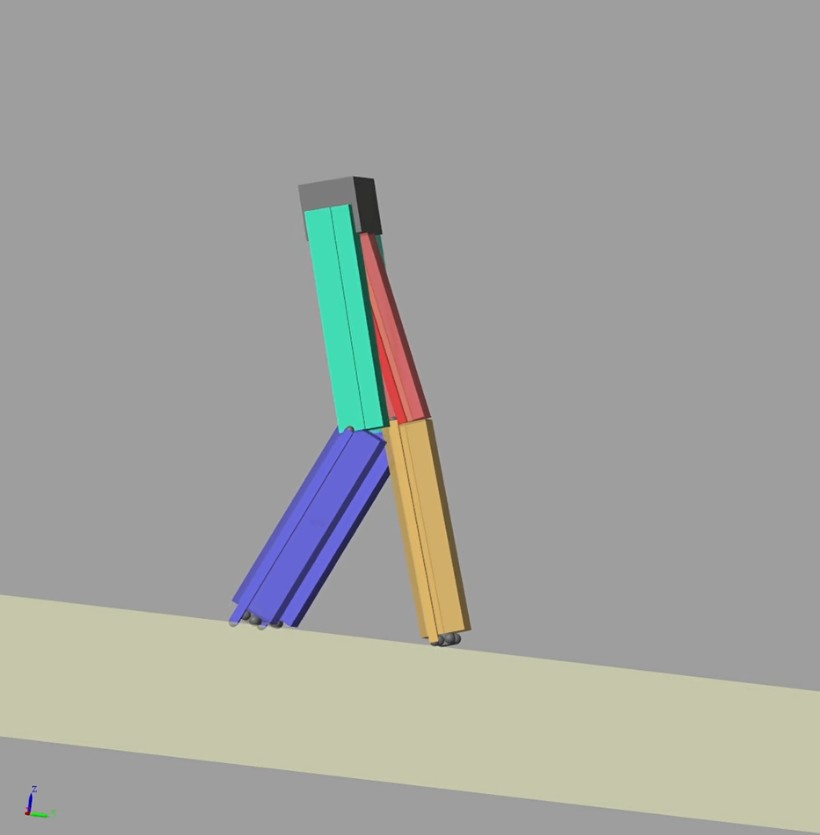
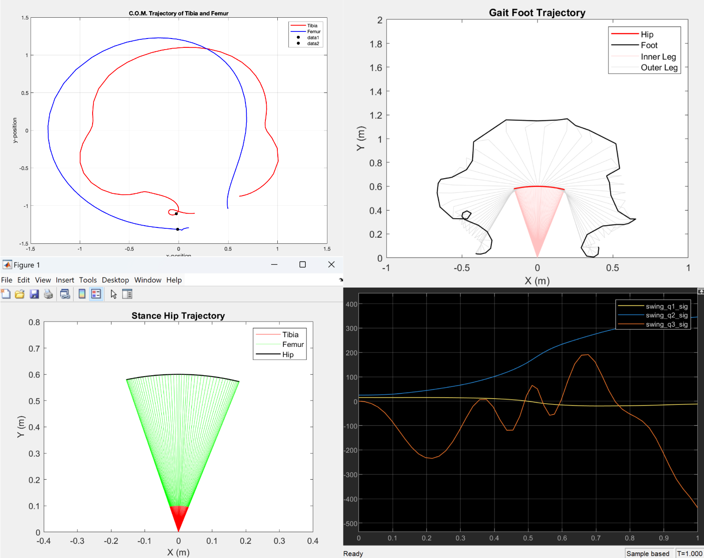

Modeling
System Model
The simplest theoretical model of a passive walker device is that of the rimless wheel

The walker is modeled as a three-link system (a stance leg, a swing leg, and a torso) using generalized
coordinates defined by joint angles. This model consists of a single point mass at the hip and straight legs
radiating out of essentially a rimless wheel, and has a given analytical solution for its step-to-step behavior. By just having two of
the legs and placing a pin between them, the legs may move relative to each other and the compass gait can be created, as seen below.

Lagrangian Equation
The dynamics are derived using Lagrangian mechanics.
$$ H(q)\ddot{q} + B(q,\dot{q})\dot{q} + G(q) = 0 $$
Inertia matrix, velocity-dependent (Coriolis/centrifugal), and gravitational terms for the three-link pendulum.
Unlocked Knees

Upon kneestrike, the knee will remain locked. The matrices below describe the system when the knee joint is
free (unlocked), allowing three independent degrees of freedom:
Inertia matrix:
$$
H =
\begin{bmatrix}
H_{11} & H_{12} & H_{13} \\
H_{12} & H_{22} & H_{23} \\
H_{13} & H_{23} & H_{33}
\end{bmatrix}
$$
Coriolis and Centrifugal forces with varying joint velocities:
$$
B =
\begin{bmatrix}
0 & h_{122}\dot{q}_2 & h_{133}\dot{q}_3 \\
h_{211}\dot{q}_1 & 0 & h_{233}\dot{q}_3 \\
h_{311}\dot{q}_1 & h_{322}\dot{q}_2 & 0
\end{bmatrix}
$$
Gravity Matrix
$$
G =
\begin{bmatrix}
-(m_s a_1 + m_t(l_s + a_2) + (m_h + m_s + m_t)L)g\sin(q_1) \\
(m_t b_2 + m_s l_t)g\sin(q_2) \\
m_s b_1 g \sin(q_3)
\end{bmatrix}
$$
Unlocked knee conditions:
$$
H_{11} = m_s a_1^2 + m_t(l_s + a_2)^2 + (m_h + m_s + m_t)L^2
$$
$$
H_{12} = -(m_t b_2 + m_s l_t)L \cos(q_2 - q_1)
$$
$$
H_{13} = -m_s b_1 L \cos(q_3 - q_1)
$$
$$
H_{22} = m_t b_2^2 + m_s l_t^2
$$
$$
H_{23} = m_s l_t b_1 \cos(q_3 - q_2)
$$
$$
H_{33} = m_s b_1^2
$$
$$
h_{122} = -(m_t b_2 + m_s l_t)L \sin(q_1 - q_2)
$$
$$
h_{133} = -m_s b_1 L \sin(q_1 - q_3)
$$
$$
h_{211} = -h_{122}, \quad h_{311} = -h_{133}
$$
$$
h_{233} = m_s l_t b_1 \sin(q_3 - q_2), \quad h_{322} = -h_{233}
$$
Locked Knees
The system is re-derived for locked knees using a reduced Lagrangian formulation:
$$
H =
\begin{bmatrix}
H_{11} & H_{12} \\
H_{12} & H_{22}
\end{bmatrix}
$$
$$
B =
\begin{bmatrix}
0 & h\dot{q}_2 \\
-h\dot{q}_1 & 0
\end{bmatrix}
$$
$$
G =
\begin{bmatrix}
-(m_s a_1 + m_t(l_s + a_2) + (m_h + m_t + m_s)L)g\sin(q_1) \\
(m_t b_2 + m_s(l_t + b_1))g\sin(q_2)
\end{bmatrix}
$$
These equations govern swing foot impact, heel strike collision, and switching between stance and swing legs:
$$
H_{11} = m_s a_1^2 + m_t(l_s + a_2)^2 + (m_h + m_s + m_t)L^2
$$
$$
H_{12} = -(m_t b_2 + m_s(l_t + b_1))L\cos(q_2 - q_1)
$$
$$
H_{22} = m_t b_2^2 + m_s(l_t + b_1)^2
$$
$$
h = -(m_t b_2 + m_s(l_t + b_1))L\sin(q_1 - q_2)
$$
Simulations
Slope Angle Optimization
Using MATLAB and Simulink simulations, the optimal slope angle for the passive walking robot was determined to be 3°.
This result was obtained by sweeping slope angles from 0° to 5° and evaluating gait performance using conditional logic.
Evaluation Method:
- Parameter sweep: θ ∈ [0°, 5°]
- Simulation-based validation
- Stability determined via
if-else logic conditions
A stable gait was defined as a periodic walking cycle without excessive or insufficient swing motion.
Stability Criteria
- Periodic Gait Cycle: Joint states return to initial conditions after each step.
- Kneestrike Dynamics: Swing leg fully extends and locks during impact.
- Heelstrike Dynamics: Proper ground contact angle and momentum transfer.
- Swing Leg Motion: Sufficient forward motion without instability or stalling.
Results
- θ < 3°: Insufficient swing due to low gravitational potential energy.
- θ > 5°: Excessive swing → instability, loss of balance, high-speed gait.
- θ = 3°: Optimal — stable, repeatable periodic gait satisfying all conditions.
The governing equations were derived from the Lagrangian formulation, assuming uniform mass distribution along each leg segment.
3D Simulink / Simscape Model
A 3D dynamic model was developed using Simscape to represent a biped robot with a knee joint.

Model Design
- Initial condition: robot collapses due to flexed knee configuration
- Spring added between femur and tibia to restore extension
- Prismatic rod mechanism used to simulate knee locking at heel strike
Key Challenges
- Spring stiffness too high → prevented proper kneestrike
- Contact dynamics introduced friction and bouncing
- High sensitivity due to 3D complexity (many degrees of freedom)
While a partial gait cycle (single swing/stance phase) was achieved, instability from contact dynamics limited full-cycle performance.
Due to these challenges, the analysis transitioned to a 2D dynamic model for better control and interpretability.
2D Simulink Dynamics Simulation
A 2D simulation framework was developed in Simulink to analyze system dynamics and validate the derived equations.
Model Setup
- Two dynamic phases: Stance and Swing
- State vector: q = (q₁, q₂, q₃)
Initial Conditions:
q₁ = 15°, q₂ = 25°, q₃ = 0°
q̇₁ = 0°/s, q̇₂ = 0°/s, q̇₃ = 0°/s
Model Parameters
- Tibia length and mass = 1/5 of femur
- Hip, knee, and foot trajectories computed via transformation matrices

Results & Observations
- Stance phase (q₁): Physically reasonable behavior
- Swing phase issue: q₂ increased positively instead of decreasing
- This caused instability in q₃ and overall system divergence
Critical Issue:
Expected: q₂ → negative during swing
Observed: q₂ → increasing positive values
Despite testing multiple initial conditions, no configuration produced the expected negative evolution of q₂.
Resolving this behavior was identified as the primary requirement for achieving a stable simulated gait.